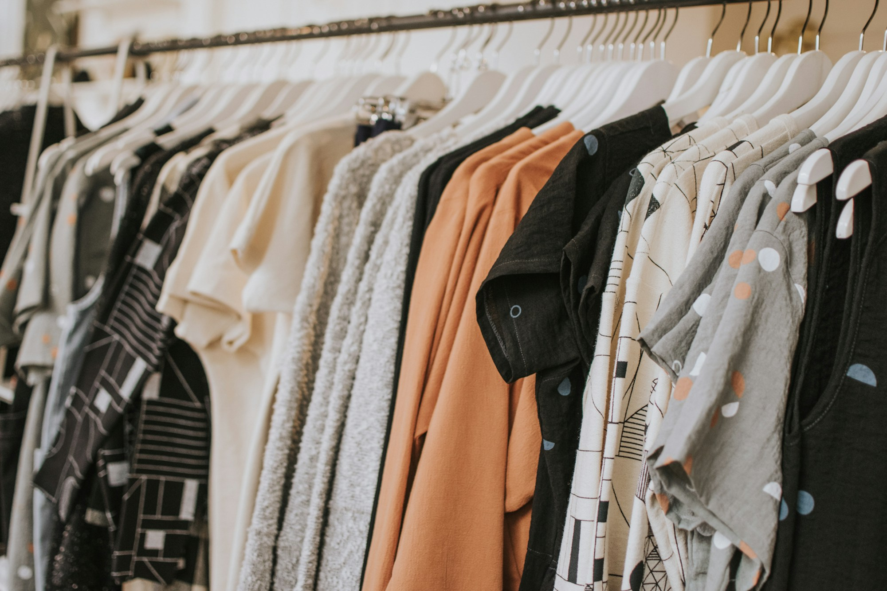

Product development
Tech pack review, sampling coordination, fit and construction refinement.

We coordinate the key stages of apparel development and production with a focus on clear communication, process visibility and consistent quality.
Every programme is shaped around product complexity, order requirements and the standards of the destination market.
Tech pack review, sampling coordination, fit and construction refinement.
Fabric, trims and components selected to meet product specifications.
Production planning, workmanship monitoring and in-line quality checks.
Final inspection coordination, packing standards and export documentation.